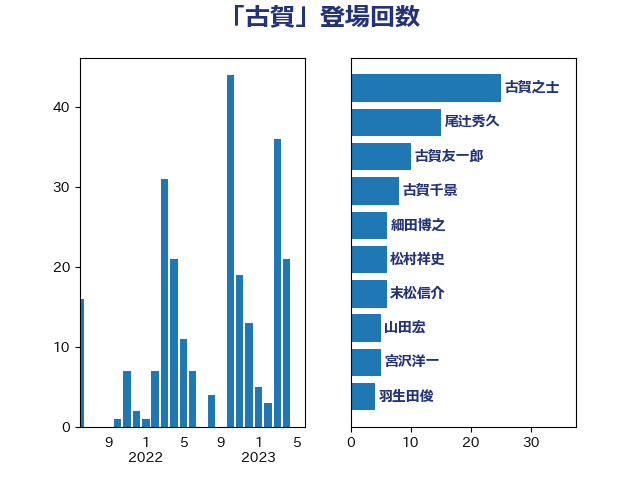

単語「古賀」

| 古賀之士 | 立憲民主党 | 25 回 |
| 尾辻秀久 | 無所属 | 15 回 |
| 古賀友一郎 | 自由民主党 | 10 回 |
| 古賀千景 | 立憲民主党 | 8 回 |
| 細田博之 | 自由民主党 | 6 回 |
| 松村祥史 | 自由民主党 | 6 回 |
| 末松信介 | 自由民主党 | 6 回 |
| 山田宏 | 自由民主党 | 5 回 |
| 宮沢洋一 | 自由民主党 | 5 回 |
| 羽生田俊 | 自由民主党 | 4 回 |
| 永岡桂子 | 自由民主党 | 4 回 |
| 松下新平 | 自由民主党 | 4 回 |
| 山東昭子 | 自由民主党 | 4 回 |
| 古賀篤 | 自由民主党 | 4 回 |
| 勝部賢志 | 立憲民主党 | 4 回 |
| 鈴木俊一 | 自由民主党 | 3 回 |
| 自見はなこ | 自由民主党 | 3 回 |
| 斎藤嘉隆 | 立憲民主党 | 3 回 |
| 小倉將信 | 自由民主党 | 3 回 |
| 中曽根弘文 | 自由民主党 | 3 回 |
| 高橋克法 | 自由民主党 | 2 回 |
| 高市早苗 | 自由民主党 | 2 回 |
| 金子恭之 | 自由民主党 | 2 回 |
| 酒井庸行 | 自由民主党 | 2 回 |
| 豊田俊郎 | 自由民主党 | 2 回 |
| 谷公一 | 自由民主党 | 2 回 |
| 西村明宏 | 自由民主党 | 2 回 |
| 福岡資麿 | 自由民主党 | 2 回 |
| 河野太郎 | 自由民主党 | 2 回 |
| 松野博一 | 自由民主党 | 2 回 |
| 松本剛明 | 自由民主党 | 2 回 |
| 本田顕子 | 自由民主党 | 2 回 |
| 斉藤鉄夫 | 公明党 | 2 回 |
| 後藤茂之 | 自由民主党 | 2 回 |
| 岡田直樹 | 自由民主党 | 2 回 |
| 小沼巧 | 立憲民主党 | 2 回 |
| 小池晃 | 日本共産党 | 2 回 |
| 宮口治子 | 立憲民主党 | 2 回 |
| 佐藤英道 | 公明党 | 2 回 |
| 伊藤俊輔 | 立憲民主党 | 2 回 |
| 中野英幸 | 自由民主党 | 2 回 |
| 三宅伸吾 | 自由民主党 | 2 回 |
| 青木愛 | 立憲民主党 | 1 回 |
| 長峯誠 | 自由民主党 | 1 回 |
| 鈴木英敬 | 自由民主党 | 1 回 |
| 野田聖子 | 自由民主党 | 1 回 |
| 野村哲郎 | 自由民主党 | 1 回 |
| 里見隆治 | 公明党 | 1 回 |
| 辻元清美 | 立憲民主党 | 1 回 |
| 西田昭二 | 自由民主党 | 1 回 |
| 藤丸敏 | 自由民主党 | 1 回 |
| 蓮舫 | 立憲民主党 | 1 回 |
| 竹谷とし子 | 公明党 | 1 回 |
| 竹内譲 | 公明党 | 1 回 |
| 秋葉賢也 | 自由民主党 | 1 回 |
| 石井浩郎 | 自由民主党 | 1 回 |
| 熊谷裕人 | 立憲民主党 | 1 回 |
| 滝沢求 | 自由民主党 | 1 回 |
| 渡辺博道 | 自由民主党 | 1 回 |
| 清水貴之 | 日本維新の会 | 1 回 |
| 海江田万里 | 立憲民主党 | 1 回 |
| 浅田均 | 日本維新の会 | 1 回 |
| 河野義博 | 公明党 | 1 回 |
| 水岡俊一 | 立憲民主党 | 1 回 |
| 橋本岳 | 自由民主党 | 1 回 |
| 梅村みずほ | 日本維新の会 | 1 回 |
| 柴田巧 | 日本維新の会 | 1 回 |
| 柳本顕 | 自由民主党 | 1 回 |
| 林芳正 | 自由民主党 | 1 回 |
| 松沢成文 | 日本維新の会 | 1 回 |
| 杉尾秀哉 | 立憲民主党 | 1 回 |
| 星野剛士 | 自由民主党 | 1 回 |
| 徳永久志 | 立憲民主党 | 1 回 |
| 徳永エリ | 立憲民主党 | 1 回 |
| 平沼正二郎 | 自由民主党 | 1 回 |
| 岸田文雄 | 自由民主党 | 1 回 |
| 山田美樹 | 自由民主党 | 1 回 |
| 山本左近 | 自由民主党 | 1 回 |
| 山崎正恭 | 公明党 | 1 回 |
| 山口俊一 | 自由民主党 | 1 回 |
| 尾崎正直 | 自由民主党 | 1 回 |
| 小林茂樹 | 自由民主党 | 1 回 |
| 小島敏文 | 自由民主党 | 1 回 |
| 安江伸夫 | 公明党 | 1 回 |
| 大串正樹 | 自由民主党 | 1 回 |
| 堀場幸子 | 日本維新の会 | 1 回 |
| 堀内詔子 | 自由民主党 | 1 回 |
| 堀井巌 | 自由民主党 | 1 回 |
| 国定勇人 | 自由民主党 | 1 回 |
| 和田義明 | 自由民主党 | 1 回 |
| 吉田宣弘 | 公明党 | 1 回 |
| 友納理緒 | 自由民主党 | 1 回 |
| 勝目康 | 自由民主党 | 1 回 |
| 伊藤岳 | 日本共産党 | 1 回 |
| 伊佐進一 | 公明党 | 1 回 |
| 中谷真一 | 自由民主党 | 1 回 |
| 上月良祐 | 自由民主党 | 1 回 |